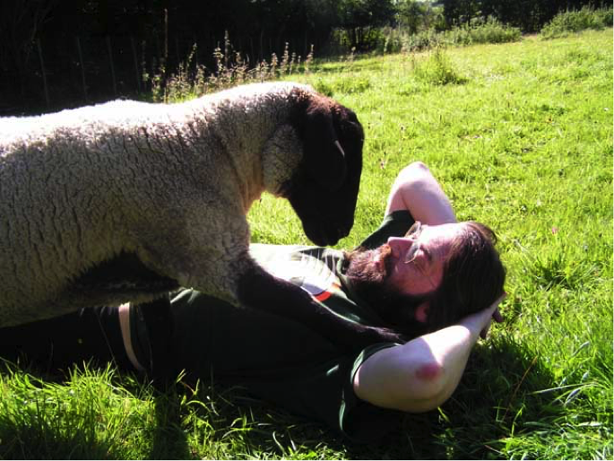

Enumerating Ruminants
Tom Tyler
T [dot] Tyler [at] leeds [dot] ac [dot] uk
University of Leeds, School of Media and Communication
Abstract
Since the early 1980s, the independent videogame designer Jeff Minter has created a raft of classic and influential games, including Llamatron: 2112, Tempest 2000 and Gridrunner. Minter frequently reworks his games, updating, amending, and modifying their gameplay and graphics, often over many years. At the same time, the games regularly feature innumerable sheep, goats, llamas, oxen, camels, giraffes, and other ungulates. Is it possible to count the sheep who appear in Minter’s games? Can we enumerate the ruminants? Is it even feasible to list the different games? Starting with an oft-repeated tale of an insomniac king and his wily storyteller, and the relatively recent night-time practice of counting sheep to bring about sleep, I explore in this essay the opposing concepts of enumeration and rumination. Enumeration is the successive differentiation of one individual after another from a series of their kind. Rumination, on the other hand, is a matter of repeatedly turning things over, of revisiting, refining or otherwise reworking matters that occasion sustained or at least recurring attention. Considered together, these two concepts provide us with a fresh perspective on Minter’s countless, evolving games.
Early in the twelfth century, the Christian convert Petrus Alphonsi compiled a collection of thirty-three tales, to which he gave the title Disciplina Clericalis (A Training Manual for Clerics). The contents were drawn, he said, “partly from the sayings of wise men and their advice, partly from Arab proverbs, counsels, fables and poems, and partly from bird and animal similes” (Petrus Alphonsi 1977, 104). The twelfth tale concerns “The King and his Story-Teller.” One night, having listened to five stories as usual, but still unable to sleep, the king wished to hear more. His story-teller told him three further tales, but still the king wanted more. He demanded a tale of great length. And so, the story-teller began: a farmer went to market with a thousand solidi and bought there 2000 sheep, each costing six dinars. Whilst returning home, however, he found that the brook he needed to cross was swollen with flood water. Searching unsuccessfully for a bridge or ford, he eventually came across a small boat, large enough to hold only himself and two sheep. With no alternative, he put two of his animals aboard and crossed over. But at this point, the story-teller fell asleep. The king woke him and ordered that he finish the tale. The story-teller replied: “That river is broad, but the skiff is tiny and the flock of sheep immense (innumerabilis). Allow, therefore, the aforementioned farmer to transport his sheep, and then I will finish the story I have begun” (Petrus Alphonsi 1911, 17; Petrus Alphonsi 1977, 123; translation modified).
There is a thirteenth century Italian version of the tale, which appears in the anonymous Le Cento Novelle Antiche. It is close to Petrus Alphonsi’s telling in most respects, although the farmer now has only 100 coins, and the boat is so small—indeed it is “immeasurably small” (dismisura picciolino)—that it will hold only a single animal beside him. Again, the story-teller suggests to his lord that they should let all the sheep be ferried over before resuming the tale: since they would not have crossed in a year (uno anno), he could meanwhile “sleep at his ease” (Le Cento Novelle Antiche 50; Storer 96). The tale is told once more in Cervantes’ Don Quixote. This time, late at night, Don Quixote and his squire Sancho Panza hear a strange hammering noise close at hand (which turns out later to be caused by a fulling mill). Tricked by Sancho into waiting until morning to investigate, Don Quixote is outraged at the suggestion that he might dismount and sleep whilst they wait, and agrees instead to hear a story. As he begins the tale, Sancho initially repeats everything twice, according, he says, to the custom in his country, much to Don Quixote’s dismay. Now the farmer must transport 300 goats, rather than sheep, and this time the tale is interrupted when the master, Don Quixote, fails to keep count as instructed. Sancho tells him that, as a result, he has forgotten the rest of the story, though “there was much virtue in it, and entertainment” (Cervantes, vol. 1: chap. 20).
It is perhaps inevitable that modern readers will detect parallels between the telling of this night-time tale and the contemporary practice of counting sheep to induce sleep (Galbi 2013). The story does concern itself with sheep, except when they are goats, and the matter of sleep is unquestionably mentioned each time, although the story-teller’s concern is never to cure insomnia, but rather to outwit his demanding master. The issue of counting is less clear-cut still. To be sure, though they change between the different versions of the story, many precise figures are always specified: we are told variously of the number of tales that the story-teller has already related, the amount of money the farmer has and how much each sheep costs him, how many sheep there are and how many will fit in the boat, and even the imagined length of time that it will take to transport them all across the river. Despite these carefully detailed quantities, however, there is no mention at all in the earliest iterations of the tale of the actual practice of counting, of successively numbering the members of a series; indeed, the ferrying of the sheep is interrupted after just a single crossing. Counting is only suggested by Sancho, and, thanks to Don Quixote’s reluctance, is never even attempted.
Moreover, when it comes to that supposed cure for sleeplessness, writers have not always thought to count their sheep either. In his 1807 sonnet “To Sleep,” Wordsworth catalogues his several attempts to combat insomnia, begun by thinking on, but not counting, “A flock of sheep that leisurely pass by, / One after one” (Wordsworth 5:40). In Harriet Martineau’s 1833 tale of political economy, Sowers Not Reapers, Mr. Fergusson recalls the monotonous sight of one sheep after another jumping over a breach in his fences: “The recollection of the scene of transit served to send the landowner to sleep more than once, when occurring at the end of the train of anxious thoughts which had kept him awake,” but Mr. Fergusson never counts the sheep (Martineau 103–104). And from Seba Smith’s portrait of Yankee life of 1843, “Getting Over the Difficulty,” we learn how, on the night before his wedding, Peter Van Horn of Schenectady “shut his eyes with all his might, and tried to think of sheep jumping over a wall; but do all he could, sleep wouldn’t come” (Smith 362). Like Wordsworth and Mr. Fergusson, however, Peter Van Horn does not feel compelled to count the participants in his procession. It seems that it was not until the 1860s, or thereabouts, that counting one’s sheep became the norm. Over the course of his sketches of the Crimean War, for instance, Lascelles Wraxall draws attention to a common difficulty with the practice: “you get to a hundred and ninety odd, and then, another thought invades your mind, and your labour is all thrown away” (Wraxall 181). References to the counting of sheep, as a more or less effective means of tackling insomnia, begin to appear with increasing frequency from early in the twentieth century onward. Even T. S. Eliot, in the manuscript for The Waste Land, leaves the option open to his would-be poet, Fresca, though the passage is omitted from the published version: “When restless nights distract her brain from sleep / She may as well write poetry, as count sheep” (Eliot 27).
Whether or not it is useful to consider the tale of “The King and his Story-Teller” as the precursor of the notion that one should think about sheep in order to bring about sleep, what we do find at the heart of all these varying stories, poems, and reports is a methodical attempt to isolate and differentiate one individual after another (or perhaps a pair), from a series of their kind, a defining element of both counting and enumeration. The verb “enumerate” derives directly from the Latin enumerare, to count out, and its primary meaning is, indeed, “to ascertain the number” of some set of things. But, according to the Oxford English Dictionary, to enumerate is “more usually, to mention (a number of things or persons) separately, as if for the purpose of counting; to specify as in a list or catalogue” (“Enumerate, v.;” emphasis added). In cases of enumeration, a discrimination is made between the members of a shared group, who are, one after another, discerned, set apart, and, most often, explicitly identified in some way. Despite the etymology, this enumerative identification may or may not involve counting. Whilst relating Jason’s quest for the golden fleece, Apollodorus identifies each of those who sailed with him, listing them carefully by name, but he does not count or number them (Apollodorus I.9.16). Nonetheless, George Stanley Faber does not hesitate to suggest that, although the huntress Atalanta is not generally included by other writers, she is “enumerated” by Apollodorus amongst the Argonauts (Faber I.34). In our accounts, the sheep may not be specified or identified by name, as were the Argonauts, but they are, momentarily at least, distinguished from their fellows: counted or not, the individuals must be imagined, one by one (or perhaps two by two), as crossing a river, or passing by, or jumping over a broken fence or wall, or otherwise standing out as particular members of an ordinarily indistinguishable flock.
An unequivocal but unnumbered enumeration of named sheep is provided by the games designer Jeff Minter, when he writes affectionately on his website of the individuals who make up his own motley flock in rural west Wales (see figure 1). We are told of Ginger, the tartiest sheep in the world; large-eared Ewenity; aging and arthritic Shaggysheep; the inappropriately named Shysheep; giant, permanently relaxed Butterbean; big-nosed Katamari the escapologist; bright-eyed Fuwafuwa, who nearly died at birth; Jerry, the living plushie; quiet and gentle Shaun; and, amongst those who are now gone but not forgotten, pretty Flossie, the first of the flock; the white lamb, Shaun’s sister, who was mysteriously taken within hours of being born; and little Tempest, who enjoyed playing with the dogs (Minter). Minter gives the lie to the conventional belief that all sheep are alike by recounting the varied histories, habits and idiosyncrasies of Ginger, Fuwafuwa, Katamari and the rest, identifying and introducing them, one after another, as distinct individuals, much as Apollodorus enumerated the Argonauts.

Figure 1. Ginger demands attention from Minter
Minter, nicknamed Yak, began publishing videogames in the early 1980s. His creations, most often shoot-‘em-ups and fast-paced puzzlers, are characterized by off-beat humor and psychedelic visuals. Minter’s predilection for ungulates (hooved mammals) of all kinds also informs his games, and a considerable quantity of sheep and other ruminants have appeared in numerous capacities and roles. Sheep feature, for instance, as a ravenous, flying defender against alien invasion in Sheep in Space (1984); as grazing assistants with your lawn-mowing mission in Hover Bovver 2: Grand Theft Flymo (2002); as the “Mothersheep” haven in Caverns of Minos (2012); and, implicitly, in the end-of-day “Sheepenumerationtime” of the healthy eating fruit-‘em-up Five a Day (2012). Goats have appeared, meanwhile, as a frisky mother and her growing family of kids in GoatUp (2011) and its sequel GoatUp 2 (2013). Leaping deer can be seen in a tech demo coded for the unreleased Atari Panther console. Llamas are ever-present, as a laser-spitting collector of docile ‘beasties’ in Llamatron: 2112 (1991); as a family of three in need of killdroid protection in Mama Llama (1985); as a defender of humanity, fighting cybernetic spiders in Metagalactic Llamas Battle at the Edge of Time (1983); as defenseless prey to extraterrestrials in Andes Attack (1982); and in the very name of Minter’s software company, Llamasoft, founded in 1982. Red and blue oxen represent rival, polarized factions in Amazonian-influenced Super Ox Wars (2012), whilst horn-flinging Space Oxen appear in tube shooter Tempest 2000 (1994) and its successor TxK (2014), which also includes an unsteady, bucking “bull ride” level. Colossal, fireball-belching camels must be repelled in Attack of the Mutant Camels (1983), but return as the means of saving camelkind with the help of a bipedal goat, in Revenge of the Mutant Camels (1984, 1992). Finally, we find a leaping, increasingly long-tailed giraffe of sorts in Space Giraffe (2007), a creature capable of the devastating “bull attack” (the game also includes the track “Flossie’s Frolic,” with vocals by the late Flossie herself).
Ruminants such as these are herbivores whose digestive tracts have evolved to extract maximum nutrition from a diet high in fibrous plant matter. Most have a stomach comprised of four chambers, the largest of which is called the rumen, a huge fermentation vat filled with saliva and micro-organisms where food from diverse sources begins to break down and separate into gasses, solids, and liquids. When a ruminant is not actually feeding, clumps of partially masticated food are regurgitated from the rumen and chewed over more fully. The bolus or “cud” of regurgitated digesta is made up of the lighter, longer fibers lying near the top of the rumen, most likely combining both matter which has and matter which has not been rechewed before. This process of chewing the cud is called rumination, and will occupy ruminants for hours at a time (Brooker et al. 931; Webster 29–38). (Llamas and camels, who possess three-chambered stomachs, are classified as pseudoruminants, though they chew the cud just like sheep, goats and cows.) The term rumination also describes, of course, “the action of revolving something in one’s mind,” which is to say deliberate, unhurried meditation or contemplation (“Rumination, n.”). In Henry Brooke’s picaresque novel, The Fool of Quality, for instance, the young Lord Bottom refuses to join the country dances, preferring instead to sit apart, “ruminating and feeding on his own cogitations” (Brooke 4: 162). Rumination, then, is a matter of repeatedly turning things over, of revisiting, refining, or otherwise reworking matters that occasion sustained or at least recurring attention. Such was the case, we might argue, with the tale of “The King and his Story-Teller,” deriving as it apparently did from some combination of the sayings of wise men, Arab fables, and animal similes, synthesized and successively reworked (in three different languages) by Petrus Alphonsi, by the author of Le Cento Novelle Antiche, and by Miguel de Cervantes. Similarly, we encounter ruminative reiterations and revisions in the multiple, incompatible retellings of the tale of the Golden Fleece, in Sancho Panza’s ponderously reworded repetitions, and in Eliot’s substantially redrafted Waste Land. These ruminations, not unlike the title of the present essay, recompose existing material which may well have been recomposed a number of times before.
Both enumeration and rumination are concerned, then, with multiple instances of a kind. However, where enumeration is sequential, cataloging a cumulative series of unique entities, rumination is iterative, repeatedly reworking that which is more or less the same. Where enumeration is concerned with carefully specified, discrete individuals, rumination charts the transformation of an indistinct aggregate of changeable integrity. And whereas the usual finitude of enumeration can sometimes pass into the innumerable on account of sheer quantity (as happens when counting sheep, for instance), the incalculability of the objects of rumination is due, in contrast, to the indefinite quality of the process: cuds do not maintain cohesion for long. The distinction between enumeration and rumination is not always clear-cut, however. In recounting at the start of this essay the tale of “The King and his Story-Teller,” three different versions were enumerated, but these were, as we saw, iterations in an on-going process of rumination: this is a story that has been unhurriedly turned over, reworked and revised over time. The same is true of that collection of night-time reflections, by Wordsworth, Harriet Martineau, Seba Smith, Lascelles Wraxall and T. S. Eliot, when sheep were remembered or imagined, and sometimes counted: this selective enumeration highlighted but a few moments in a long-standing, ongoing rumination. Still, though in principle one can enumerate the cuds of rumination, the uncertain coherence of regurgitated digesta will often make such a survey as much a matter of opinion as observation. Should we consider the different versions of the King’s bed-time story one tale or three? Are those many attempts to cure insomnia by reflecting on ovines, whether with or without counting, all the same practice? Indeed, is the tale of “The King and the Story-teller” part of the same ruminative process that includes counting sheep? Counting the turns of rumination will frequently require that we exercise judgment as to what should count as a distinct account.
So, what of those cud-chewing creatures we encounter in the games of Jeff Minter? Just how many sheep, goats, llamas, oxen, camels, and giraffes are there? Is it possible to count the sheep, or enumerate his ruminants? Minter frequently reworks games, updating, amending, and modifying their gameplay and graphics, often repeatedly, over extended periods of time. The side-scrolling shooter Sheep in Space, for instance, draws on Eugene Jarvis’s 1983 arcade game Defender (which Minter also remade in 1995 as Defender 2000), incorporating decorative camels and llamas, as well as multiplying the playing area’s gravitational fields, an innovation seen earlier in the goat-themed Ancipital (1984). The shoot-‘em-up Llamatron: 2112, meanwhile, written initially for the Atari ST and ported to the Commodore Amiga and PC DOS, derives in part from another arcade game by Jarvis and Larry DeMar, Robotron: 2084 (1982). Minter’s game has passed through multiple iterations on different platforms: it was preceded by Rhino for the Commodore PET, written collaboratively whilst Minter was at college and unreleased; incorporated in part into the game mash-up Llamazap (1995) for the Atari Falcon; and succeeded by the unfinished, rave-culture-inspired sequel Hardcore (1992), as well as by the minotaur-based remake Minotron: 2112 (2011) (a minotaur is presumably a semi- rather than a pseudo-ruminant), developed for iOS but executed in the style of the Mattel Intellivision (Minter “History of,” no date; Minter and Minter 2009, 24; Minter 2011). One game in particular exemplifies Minter’s ruminative mode of working especially well, however.
In 1982, shortly after founding Llamasoft, Minter released Gridrunner for the Commodore VIC-20. Players control a spaceship which they must navigate around a grid, avoiding lasers fired from the periphery and shooting out pods that block their movement as well as the segmented string of droids that snakes down, boustrophedon-style, from the top of the screen. Minter has said that the name, which preceded the game, derived from the film Blade Runner (1982), that gameplay was “at least partly inspired” by the arcade game Centipede (1981) (which Minter had cloned for the Sinclair ZX81 the year before), and that the Game Grid from the film Tron (1982) was perhaps also in the back of his mind. Since its initial release, Gridrunner has been “revisited and reimagined” numerous times (Minter “History of,” no date). It was immediately ported to the Atari 8-bit and Commodore 64, and an “extended version” with more varied levels, diagonal snakes, and changing grids was released for the expanded VIC-20 a few months later, and again ported to the Commodore 64. This was called Matrix (1983) in the UK and Europe, but in the US borrowed the title Attack of the Mutant Camels from Minter’s other, entirely different game. A further variant, with levels named after different ruminants (yak, llama, goat, sheep, camel, et al.), was released as Voidrunner (1987) for the Commodore 16 and ported to the Commodore 64, ZX Spectrum, and MSX. A new version named Grid Runner, whose title screen included the legend “Mint sauce is murder!,” introduced mouse-controlled gameplay and a detachable nose-cone to the ship, as well as uncharacteristically fish-shaped enemy ordnance, and was released for the Atari ST in 1989 and ported to the Amiga. A primitive 4K version of Gridrunner was also released for the Atari ST. Another, designed to be hidden inside Defender 2000, was aborted when only half finished, as was a version for the Pocket PC platform. This latter, titled Grid Runner++ (2002), went on to be developed for the PC, however, incorporating sprites designed by Llamasoft forum users, a “SheepieZapper” weapon, and an ongoing sheep rescue mission which culminates in “The Pill,” a giant, bobbing, cross-eyed sheep head. The game was ported to Mac OS X, mobile devices, Flash, and Facebook (2008), and a faster paced “special edition” employing a larger playing area, horizontal firing, and periodic profanity was later given a brief, limited release. In September 2009, yet another version was published, which Minter incautiously described as the “endpoint” of the game’s 27-year development arc (Minter “History of,” no date). Gridrunner Revolution for the PC, developed with Ivan Zorzin, added ship rotation, a seething, free-floating sun, multiple gravity points and aesthetics-based scoring, as well as including unlockable recreations of the old Commodore VIC-20 and 64 versions of the game. Revolution was updated a few months later to integrate online scoreboards, and in 2012 the original VIC-20 version of Gridrunner was “reimagined” in the style of a coin-op arcade game for iOS, Mac OS X and Android (Minter “History of,” no date; Minter and Minter 2009, 122–128, 131–133, 147–148, 166, 173–193; Minter 2012).
Truly, Gridrunner is a game that has been well ruminated. It has been regurgitated and carefully rechewed multiple times over many years. How many times? Up to a point we can enumerate more or less distinct revisions of the game, the cuds of digesta, but it seems impossible to count these. Do the numerous ports to different platforms, which sometimes exhibit minor or more substantial variations, count as different iterations? What of the recreations of earlier versions within later releases? What of special editions made available to select groups for brief periods? What of unfinished (partially digested) versions? It is futile to attempt to itemize definitively discrete instances here. Minter’s games are not Argonauts or sheep, to be listed or catalogued one after one, seriatim. Better to say that the revisions, recreations, and reimaginings of Gridrunner and the rest of the Llamasoft stock are truly innumerable, and that ruminants such as Jeff Minter are to be found constantly turning over their material, working hard to extract maximum goodness from it, and in this there is much virtue and entertainment.
Thanks
Casper J. Breuker, Federica Frabetti, Douglas Harper, Andrew Lack, Kurt Lampe, Alistair P. McGregor, Robert McKay, Jeff Minter, Karl Steel, Monica Tyler, Richard Tyler and John Webster.
Works Cited
Apollodorus. Apollodorus: The Library. Translated by James George Frazer, G. P. Putnam’s Sons, 1921. 2 vols.
Brooke, Henry. The Fool of Quality, Or, The History of Henry Earl of Moreland. Revised ed., Edward Johnston, 1777. 5 vols.
Brooker, Robert, et al. Biology. 3rd ed., McGraw-Hill Education, 2014.
De Cervantes, Miguel. The Ingenious Gentleman Don Quixote of La Mancha. Translated by John Ormsby, Thomas Y. Crowell & Co, 1885. 2 vols.
Eliot, T. S. The Waste Land: A Facsimile and Transcript of the Original Drafts Including the Annotations of Ezra Pound. Edited by Valerie Eliot, Faber and Faber, 1971.
‘Enumerate, v.’ OED Online. Oxford UP, 2012, www.oed.com/view/Entry/63033.
Faber, George Stanley. A Dissertation on the Mysteries of the Cabiri. Oxford UP, 1803. 2 vols.
Galbi, Douglas. "Ancient Origin of Counting Sheep to Fall Asleep." Purple Motes, 2013, purplemotes.net/2013/09/01/origin-counting-sheep-fall-asleep/. Accessed 1 Sept. 2013.
Le Cento Novelle Antiche. 2nd ed. Paolo Antonio Tosi. 1825.
Martineau, Harriet. Sowers Not Reapers. Illustrations of Political Economy 19. Charles Fox. 1833.
Minter, Jeff. “Meet the Llamasoft Flock.” Llamasoft, n.d.,
minotaurproject.co.uk/grr_beast.php.
---. “16 Bit.” Llamasoft, n.d., minotaurproject.co.uk/lc-16bit.php.
---. “A History Of ... Gridrunner.” Llamasoft, n.d., minotaurproject.co.uk/grr_hist_gr.php.
---. “I Have Been a Busy Ox. Again.” The Grunting Ox, 2011, minotaurproject.co.uk/blog/?p=43. Accessed 24 Feb 2011.
---. “Gridrunner Submitted to Apple.” The Grunting Ox, 2012, minotaurproject.co.uk/blog/?p=208. Accessed 17 Feb 2012.
Minter, Jeff, and Patrick Minter. A History of Llamasoft. Llamasoft, 2009.
Petrus Alphonsi. Die Disciplina Clericalis Des Petrus Alfonsi. Edited by Alfons Hilka and Werner Söderhjelm, Carl Winter’s Universitätsbuchhandlung, 1911.
---. The Disciplina Clericalis of Petrus Alphonsi. Translated by Eberhard Hermes and P. R. Quarrie, U of California P, 1977.
“Rumination, N.” OED Online. Oxford UP, 2013, www.oed.com/view/Entry/168807.
Scott, Ridley. Blade Runner. Warner Bros., 1982.
Smith, Seba. “Getting Over the Difficulty.” The Rover, 1843, edited by Seba Smith and Lawrence Labree, vol. 1 no.1, Labree, Dean & Co., 361–63.
Il Novellino: The Hundred Old Tales. Translated by Edward Storer, George Routledge & Sons; E. P. Dutton & Co., 1925.
Webster, John. Understanding the Dairy Cow. 2nd ed., Wiley-Blackwell, 1993.
Wordsworth, William. The Complete Poetical Works of William Wordsworth. Vol. 5, Houghton Mifflin Company, 1919.
Wraxall, Lascelles. Camp Life: Or Passages from the Story of a Contingent. Charles J. Skeet, 1860.